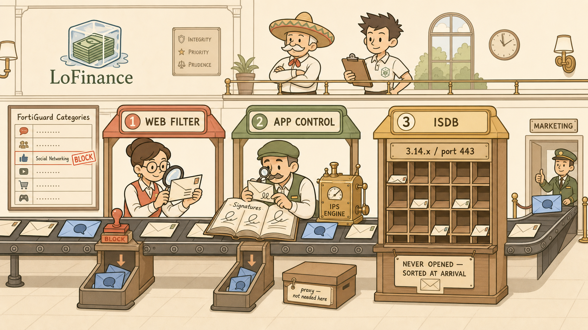
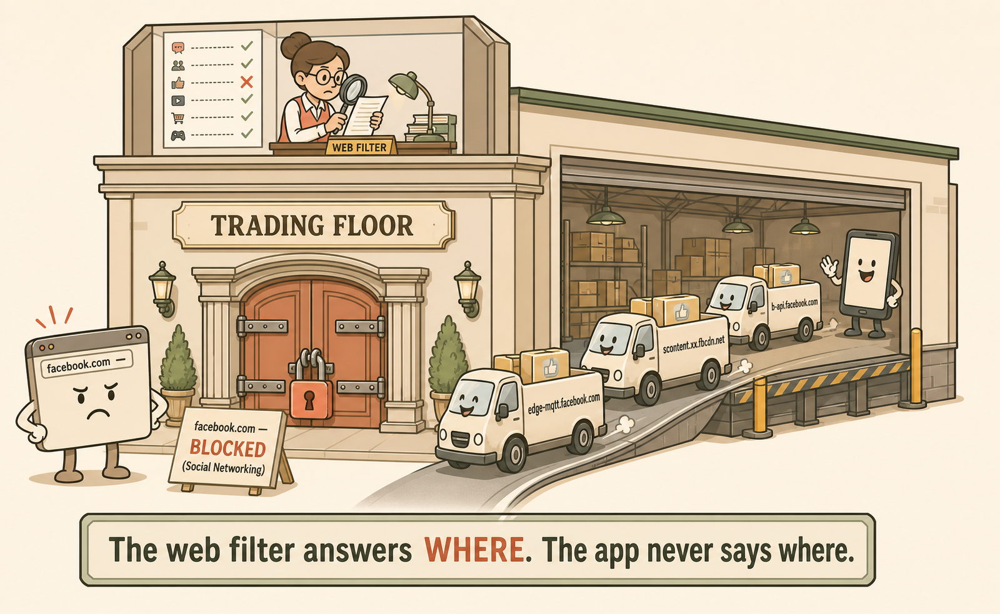
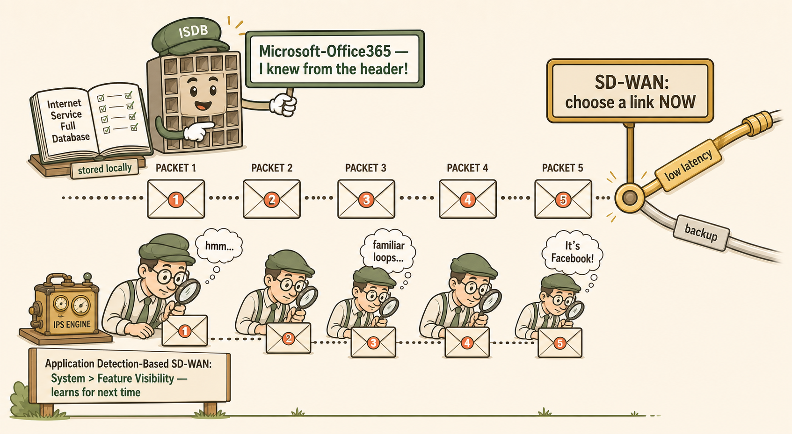
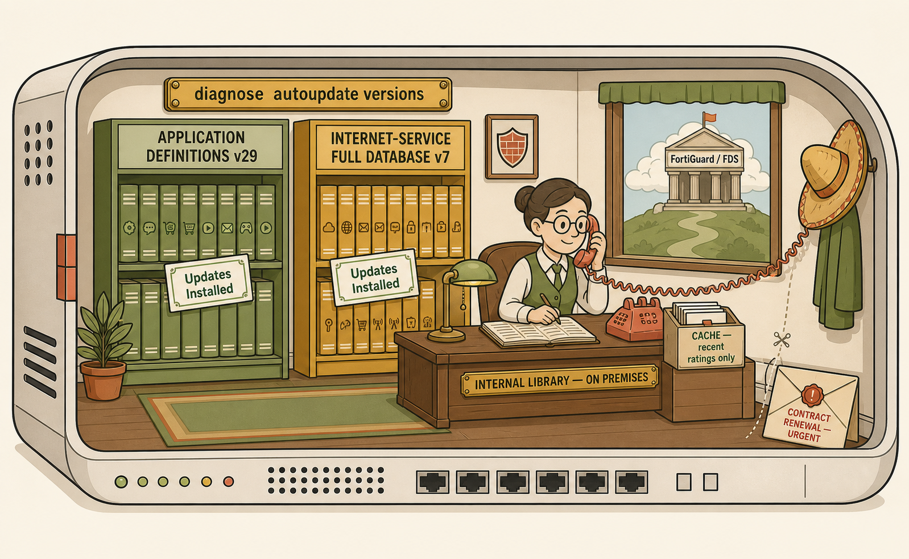
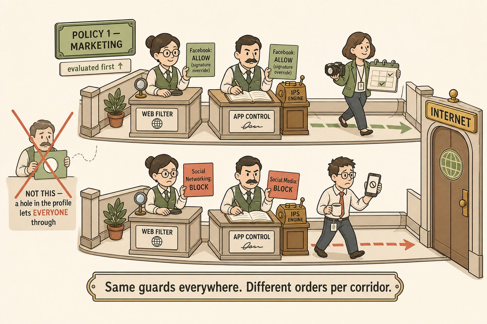

Recommended Visual Style
Chosen style: Real-World Analogy (extended scene) + Packet Journey. This session's core insight is comparative — three tools distinguished by what each sees and when it sees it. A single memory-palace scene (a mail-sorting facility with three stations) holds all three comparisons in one spatial layout, and a packet-journey strip captures the timing argument (lookup at packet one vs verdict after several packets). Decision trees and topology maps were rejected: nothing changed in the topology, and the learning is conceptual contrast, not process flow.
Scene 1 — The Sorting Hall
One image to hold the whole chapter: LoFinance's traffic as a river of envelopes passing three inspection stations.

The LoFinance Mail-Sorting Facility
Anchors the three-envelopes model spatially: each station's method IS the tool's mechanism. Recalling the room recalls the table.
Image Generation Prompt
Flat minimalistic but highly detailed vector illustration, storybook-professional style, cream/warm off-white background, coral accents, muted gold highlights, sage greens, soft brown outlines, clean bold line work, no gradients, no photorealism. A wide interior view of a warm, orderly mail-sorting hall inside a financial firm — subtle branding on the wall: a logo of money stacks frozen inside an ice cube labelled "LoFinance". A conveyor belt of cream envelopes flows left to right through THREE distinct stations. STATION 1 (left, coral canopy, sign "WEB FILTER"): a clerk with reading glasses holds one envelope up and reads the ADDRESS on its front through a magnifier; behind her, a wall directory of street names labelled "FortiGuard Categories" with one red-stamped entry "Social Networking — BLOCK". STATION 2 (centre, sage canopy, sign "APP CONTROL"): a handwriting expert compares the loops of ink on an envelope against an open book of handwriting samples titled "Signatures"; a small brass machine beside him is engraved "IPS ENGINE"; a discarded shoebox sits unused under his desk with a tag "proxy — not needed here". STATION 3 (right, gold canopy, sign "ISDB"): a sorter never touches the letters — envelopes drop through slots in a giant wooden postcode grid labelled with IP-like district numbers "3.14.x / port 443"; a sign reads "NEVER OPENED — SORTED AT ARRIVAL". In the far background, a small side door marked "MARKETING" lets one Facebook-blue envelope through under a supervisor's nod, while identical blue envelopes are stamped and diverted at stations 1 and 2. A senior engineer in a sombrero observes from a mezzanine with quiet approval; a younger engineer beside him holds a clipboard confidently. Mood: calm competence, gentle humour. No dense technical text beyond the labels described. Do NOT include: real brand logos, gradients, 3D rendering, screens of real UI.
Accessibility: A warm illustrated mail-sorting hall where envelopes pass three stations — one clerk reads addresses, one expert examines handwriting, and one grid sorts unopened envelopes by district — while a sombrero-wearing engineer watches from above.
Scene 2 — The Loading Dock (Ticket #41)
Why a working web filter misses apps: the front door is locked, the loading dock is open.

Front Door Locked, Loading Dock Open
Encodes the coverage-gap insight — the tool isn't broken, the traffic enters through a door the tool doesn't watch. Triggers the SNI-scatter memory (graph / mqtt / fbcdn).
Image Generation Prompt
Flat minimalistic detailed vector illustration, cream background, coral/sage/muted-gold palette, soft brown outlines, no gradients, no photorealism. A cutaway side view of a single stylised building labelled "TRADING FLOOR". At the FRONT (left): an ornate main door firmly bolted with a coral padlock and an official notice reading "facebook.com — BLOCKED (Social Networking)"; a frustrated browser-window character (a rectangle with a sad face and an address bar) stands outside, denied. At the REAR (right): a wide-open industrial loading dock where a cheerful stream of small delivery vans drives straight in unchecked; each van's side is painted with a hostname on its panel — "graph.facebook.com", "edge-mqtt.facebook.com", "scontent.xx.fbcdn.net", "b-api.facebook.com" — and the vans carry parcels marked with a generic thumbs-up social icon (no real logos). A smartphone character with a happy face waves them in. On the roof, a small clerk figurine (the Web Filter clerk from Scene 1, same reading glasses) faces ONLY the front door, unaware of the dock behind her. Caption space at the bottom for the line "The web filter answers WHERE. The app never says where." Mood: gently comic, instantly legible. Do NOT include: real Facebook branding, gradients, 3D.
Accessibility: A building with its front door padlocked against a sad browser character while delivery vans labelled with API and CDN hostnames drive freely into an open loading dock at the back, watched by no one.
Scene 3 — Packet Journey: Lookup vs Verdict
The timing argument that earned the sit-down: ISDB knows at packet one; app control knows several packets later.

The Race to Know — Packet One vs Packet Five
Fixes "lookup vs verdict" as a physical race along a timeline, explaining why ISDB is native to SD-WAN rules and app-based steering must learn.
Image Generation Prompt
Flat minimalistic detailed vector illustration, cream background, coral/sage/gold palette, soft brown outlines, no gradients. A horizontal packet-journey strip: five numbered envelopes (PACKET 1 through PACKET 5) travel left to right along a dotted path toward a fork in the road labelled "SD-WAN: choose a link NOW", with two diverging cables — one gold cable tagged "low latency" and one plain cable tagged "backup". ABOVE the path at packet 1: the ISDB sorter character (from Scene 1's district grid) instantly holds up a bright sign reading "Microsoft-Office365 — I knew from the header!" pointing confidently at the gold cable; a small open ledger beside him titled "Internet Service Full Database — stored locally". BELOW the path stretching from packet 1 to packet 5: the handwriting expert (App Control, with his brass IPS ENGINE machine) squints at successive envelopes with a magnifier, thought bubbles evolving: "hmm…" (packet 1), "familiar loops…" (packet 3), "It's Facebook!" (packet 5) — but by then the envelopes have already passed the fork, and a small signpost near him reads "Application Detection-Based SD-WAN: System > Feature Visibility — learns for next time". Clear visual hierarchy: the fork decision point is highlighted with a gold ring. Mood: friendly race with an obvious winner, not mockery. Do NOT include: real logos, gradients, 3D, dense config text.
Accessibility: Five envelopes travel toward a fork where a link must be chosen; a sorter identifies the service instantly at packet one, while a handwriting expert only recognises the application by packet five, after the fork has passed.
Scene 4 — What Penny Is Renting
The FortiGuard asymmetry — two libraries on-site, one librarian on the phone — and the fuse for Session 23.

Two Libraries and a Phone Line
Encodes local-vs-on-demand databases and plants the S23 failure mode: the phone line is the single live dependency.
Image Generation Prompt
Flat minimalistic detailed vector illustration, cream background, coral/sage/gold palette, soft brown outlines, no gradients, no photorealism. Interior of a small firewall "office" drawn as a cosy study inside a stylised FortiGate appliance (a rounded rectangle with subtle port dots). LEFT WALL: two neat in-house bookshelves, clearly ON the premises — one sage shelf labelled "APPLICATION DEFINITIONS v29" and one gold shelf labelled "INTERNET-SERVICE FULL DATABASE v7", each with a small stamped card reading "Updates Installed"; a plaque above both: "diagnose autoupdate versions". RIGHT SIDE: a desk where a librarian clerk (the Web Filter clerk, reading glasses) holds an old-fashioned coral telephone to her ear, the curly cord stretching out through a window toward a distant cloud building on a hill labelled "FortiGuard / FDS"; beside her, a tiny card-index box labelled "CACHE — recent ratings only", nearly empty. Ominous detail in the corner: an UNOPENED envelope on the floor marked "CONTRACT RENEWAL — URGENT", with a faint dotted line suggesting the phone cord could be cut. A sombrero rests on a coat hook. Mood: cosy but with one quiet warning note. Do NOT include: real logos, gradients, 3D rendering.
Accessibility: Inside a firewall drawn as a study, two complete bookshelves labelled as the application and internet-service databases sit locally, while a librarian must telephone a distant FortiGuard cloud for web ratings — an unopened contract-renewal envelope lies ignored on the floor.
Scene 5 — Profiles Decide WHAT, Policies Decide WHO
The design law of the episode, drawn as two checkpoints on two corridors.

Two Corridors, Same Guards, Different Orders
Prevents the either/or trap: both guards stand in both corridors; only their orders differ. The exception is the corridor, not a hole in the guard.
Image Generation Prompt
Flat minimalistic detailed vector illustration, cream background, coral/sage/gold palette, soft brown outlines, no gradients. A top-down-ish view of two parallel corridors leading to the same exit door labelled "INTERNET". TOP CORRIDOR, signposted "POLICY 1 — MARKETING" with a small "evaluated first ↑" tag: the SAME two guard characters from Scene 1 — the address-reading clerk (Web Filter) and the handwriting expert (App Control) — stand at a checkpoint, but each holds a GREEN order card reading "Facebook: ALLOW (signature override)"; a marketing employee with a camera and a content calendar walks through smiling. BOTTOM CORRIDOR, signposted "POLICY 2 — TRADING FLOOR": identical twin guards at an identical checkpoint, but holding CORAL order cards reading "Social Networking: BLOCK" and "Social.Media: BLOCK"; a quant with a coffee is politely turned away, his phone showing a generic blocked-app symbol. Between the corridors, a crossed-out sketch in a margin: a single shared guard with a hole cut through his order card, labelled "NOT THIS — a hole in the profile lets EVERYONE through". Caption space: "Same guards everywhere. Different orders per corridor." Mood: clean, didactic, lightly humorous. Do NOT include: real logos, gradients, 3D.
Accessibility: Two corridors to the internet each staffed by the same two guards; in the marketing corridor their order cards say allow Facebook, in the trading-floor corridor the same guards' cards say block — with a crossed-out sketch warning against cutting a hole in a shared order card.